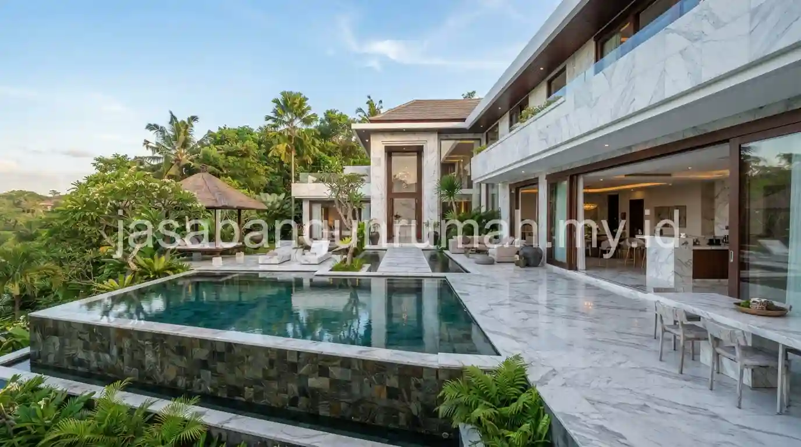

Daftar Isi
Harga pembangunan villa atau rumah mewah premium di Bali umumnya dimulai dari sekitar Rp 7 juta per meter persegi, mencakup penggunaan material seperti lantai marmer Ujung Pandang, batu alam paras Kerobokan, dan kayu jati solid pada elemen struktural maupun estetika.
Berapa Kisaran Harga Pembangunan Villa atau Rumah Mewah Premium di Bali?
Harga pembangunan rumah mewah di Bali mulai dari Rp 7 juta per meter persegi ini mencerminkan spesifikasi premium yang jauh berbeda dari rumah standar, mencakup pemilihan material impor maupun lokal berkualitas tinggi serta detail finishing yang membutuhkan keahlian tukang khusus. Untuk gambaran biaya yang lebih umum, Anda dapat membaca estimasi biaya bangun rumah per meter persegi sebagai referensi awal sebelum menyesuaikan dengan spesifikasi premium.
Angka tersebut merupakan estimasi awal yang dapat bervariasi tergantung tingkat kustomisasi desain, misalnya penambahan elemen seperti kolam renang privat, taman tropis yang luas, atau detail ukiran khas Bali pada bagian tertentu bangunan yang membutuhkan pengerjaan tangan oleh pengrajin berpengalaman. Semakin tinggi tingkat detail dan kustomisasi yang diminta pemilik, semakin besar pula biaya yang dibutuhkan dibandingkan estimasi dasar per meter persegi tersebut.
Proyek rumah mewah di kawasan Denpasar dan sekitarnya juga sering melibatkan koordinasi dengan berbagai spesialis, mulai dari tukang batu alam, pengrajin kayu ukir, hingga teknisi kolam renang, sehingga manajemen proyek yang baik menjadi kunci penting agar seluruh elemen premium tersebut dapat terintegrasi dengan hasil akhir yang presisi dan sesuai jadwal yang direncanakan.
Material Apa Saja yang Menjadi Standar Spesifikasi Rumah Mewah di Denpasar?
| Material | Karakteristik | Aplikasi Umum |
|---|---|---|
| Marmer Ujung Pandang | Slab besar dengan urat alami, permukaan mengkilap premium | Lantai ruang tamu, lobby, dan area utama villa |
| Batu Alam Paras Kerobokan/Jogja | Tekstur alami khas Bali, warna krem hingga kuning muda | Dinding fasad, kolam renang, dan elemen taman |
| Kayu Jati Solid | Kuat, tahan lama, serat kayu khas dan bernilai estetika tinggi | Kusen, pintu, decking outdoor, dan furniture built-in |
Marmer Ujung Pandang umumnya dipilih untuk area utama seperti ruang tamu atau lobby karena tampilan slab besarnya yang memberi kesan mewah tanpa banyak sambungan nat yang mengganggu keindahan pola urat alami pada permukaannya. Pemasangan material ini membutuhkan ketelitian tinggi, terutama dalam pengaturan pola urat antar slab agar terlihat menyatu secara visual.
Batu alam paras Kerobokan atau paras Jogja menjadi material khas yang sering diaplikasikan pada dinding fasad maupun elemen taman, memberi nuansa tropis Bali yang autentik sekaligus tahan terhadap paparan cuaca tropis yang lembap sepanjang tahun. Material ini juga cukup populer digunakan pada area sekitar kolam renang karena teksturnya yang tidak licin saat basah.
Kayu jati solid dipilih untuk elemen seperti kusen, pintu, dan decking outdoor karena daya tahannya terhadap kelembapan tinggi khas iklim Bali, sekaligus memberi kehangatan visual yang menyeimbangkan kesan dingin dari material seperti marmer dan batu alam. Perawatan berkala tetap diperlukan pada material kayu jati, meski daya tahannya terhadap cuaca tropis jauh lebih baik dibandingkan jenis kayu lain yang lebih rentan lapuk atau dimakan rayap.

Bagaimana Sentuhan Arsitektur Bali Modern Diintegrasikan pada Rumah Mewah?
Sentuhan arsitektur Bali modern umumnya dihadirkan melalui elemen seperti gapura angkul-angkul yang disederhanakan pada pintu masuk, area taman tengah atau courtyard yang menjadi titik fokus sirkulasi udara dan cahaya alami, serta bale bengong versi modern sebagai area bersantai terbuka di sudut lahan.
Integrasi elemen tradisional ini biasanya dilakukan secara selektif dan disederhanakan agar tetap selaras dengan garis desain modern minimalis yang mendominasi struktur utama bangunan, sehingga hasil akhirnya tetap terasa kontemporer namun tidak kehilangan identitas khas Bali yang menjadi daya tarik tersendiri bagi rumah mewah di wilayah ini.
Courtyard atau taman tengah juga memiliki fungsi praktis selain estetika, yaitu membantu sirkulasi udara alami masuk ke berbagai sudut rumah sekaligus menjadi sumber pencahayaan tambahan pada siang hari, sehingga kebutuhan pencahayaan buatan dapat dikurangi meski desain rumah cenderung tertutup dari sisi luar untuk menjaga privasi penghuni.
Bale bengong modern, yang pada arsitektur tradisional Bali berfungsi sebagai tempat bersantai kecil beratap, kini sering diadaptasi menjadi gazebo minimalis dengan struktur kayu jati dan atap alang-alang atau material modern yang menyerupai tampilan tradisional, ditempatkan di dekat kolam renang atau taman sebagai area relaksasi tambahan bagi penghuni maupun tamu villa.
Kombinasi antara material premium seperti marmer dan batu alam paras dengan elemen arsitektur khas Bali yang disederhanakan ini menciptakan karakter rumah mewah yang berbeda dari rumah mewah pada umumnya di kota besar lain, karena identitas lokal tetap dipertahankan meski dengan pendekatan desain yang modern dan kontemporer.
Perencanaan seluruh elemen premium ini, mulai dari pemilihan material hingga integrasi sentuhan arsitektur Bali, sebaiknya dikoordinasikan oleh tim kontraktor rumah profesional yang sudah berpengalaman menangani proyek serupa di kawasan Denpasar dan sekitarnya, mengingat kompleksitas pengerjaan material seperti marmer slab besar dan ukiran kayu jati membutuhkan keahlian khusus yang tidak semua kontraktor umum miliki.
Bagi pemilik lahan di Denpasar dan sekitarnya yang ingin mewujudkan rumah atau villa mewah dengan standar material premium dan sentuhan arsitektur Bali modern, dapat hubungi jasa kontraktor bangunan profesional kami untuk menjadwalkan konsultasi awal dan survey lokasi secara gratis sesuai kebutuhan dan konsep yang diinginkan.